NyXiaL'univers
NyXiaL'univers
NyXiaL'univers
NyXiaL'univers
Tu ressens quelque chose de fort depuis longtemps, sans savoir si tu peux lui faire confiance, ni par où commencer.
✦ Un échange bienveillant de 30 min pour cartographier tes ressentis et voir par où commencer.
• 3 questions pour préparer l’échange
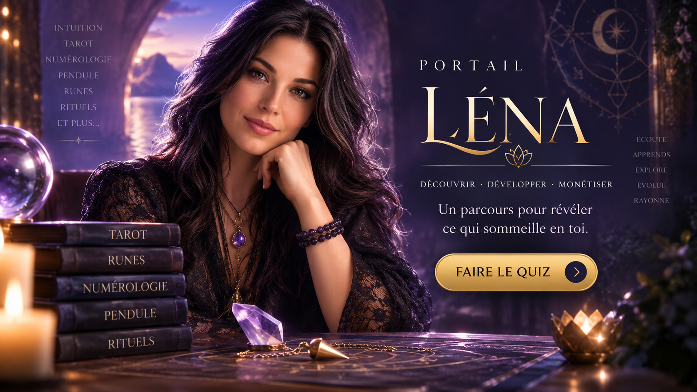
C’est justement là que beaucoup de personnes restent bloquées.
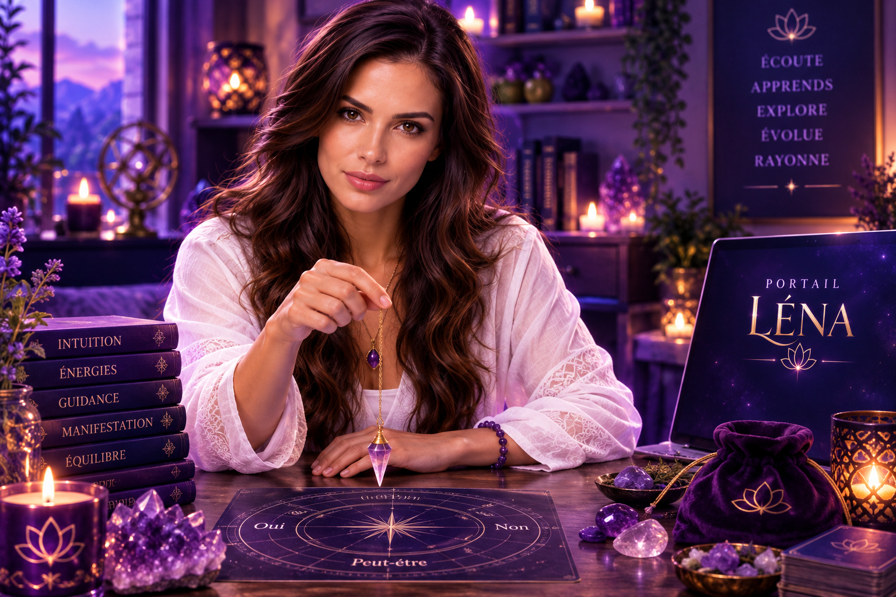
Quand le don est là, mais le chemin n’est pas encore nommé.
✦ Un échange bienveillant de 30 min pour cartographier tes ressentis et voir par où commencer.
• 3 questions pour préparer l’échange
Tu n’entres pas dans « une formation vidéo de plus ». Tu entres dans une Formation Vivante : la leçon transmet, le personnage t’accompagne quand la vraie question arrive même à 22 h 43.
Mettre un nom sur ce que tu vis déjà (intuition, clairvoyance, clairaudience, ressentis, radiesthésie, médiumnité…) sans te forcer dans une case le jour 1.
Pratiquer pour vrai — pas seulement lire « voici ce qu’est l’intuition ».
Approfondir avec la spécialiste qui te correspond.
Monétiser ce que tu maîtrises : communiquer sans spammer, structurer tes contenus, créer ton offre et t’entraîner tout de suite.
C’est la première mission de Portail Léna.
Tu vas pouvoir explorer différents univers, mieux comprendre certaines perceptions et surtout expérimenter.
Parce qu’entre lire : « Voici ce qu’est l’intuition » et commencer à reconnaître comment toi, tu vis tes propres ressentis… il y a tout un monde.
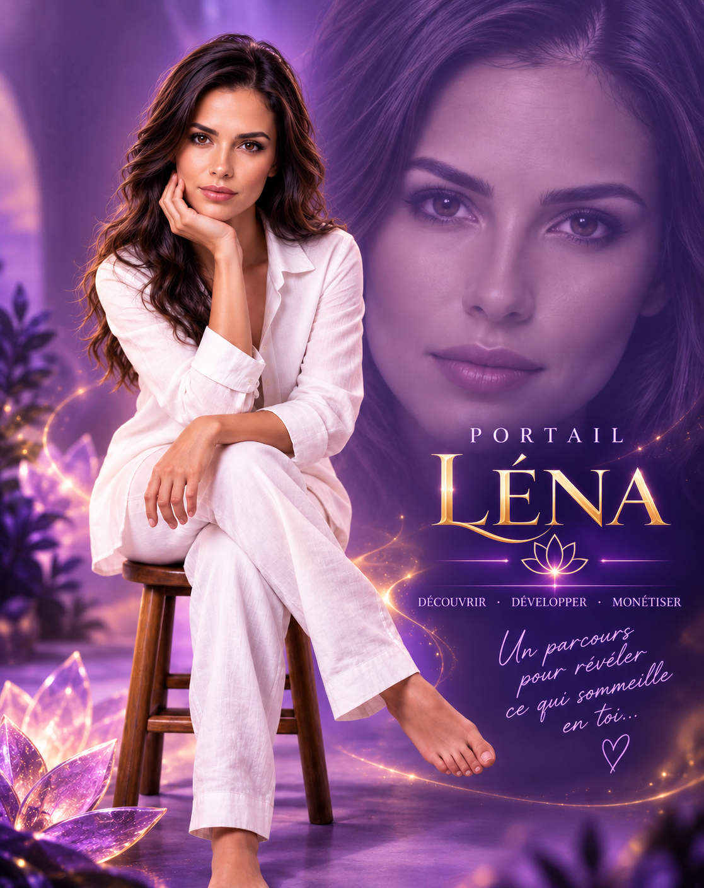
Léna est au cœur du portail.
Elle n’est pas simplement là pour répondre à quelques questions.
Elle devient ta formatrice principale dans un parcours consacré à la découverte et au développement de différentes facultés psychiques, spirituelles et intuitives.
Sa matière de formation explore notamment les corps subtils, les chakras et l’aura, puis différentes facultés comme la clairvoyance, la clairaudience, l’intuition, la télépathie, la médiumnité, les ressentis énergétiques, le magnétisme et la radiesthésie.
La philosophie derrière cet apprentissage est importante : tu ne fais pas qu’apprendre des concepts. Tu expérimentes.
La matière source elle-même présente une grande diversité de facultés et insiste sur leur développement par l’expérimentation et la pratique.
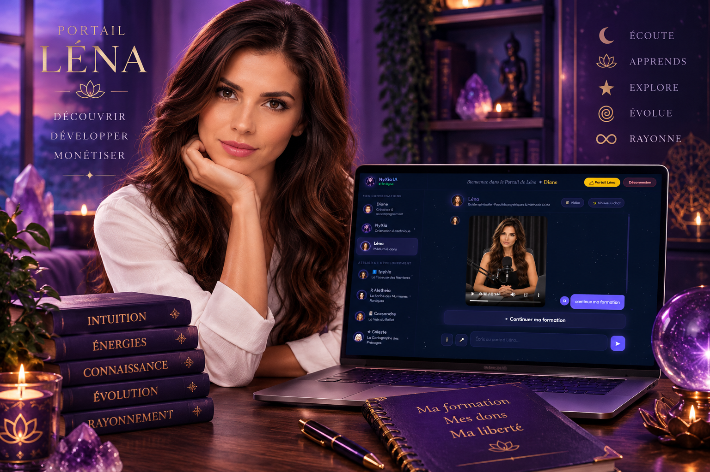
Dans une formation traditionnelle, tu regardes une vidéo. Tu lis ton document. Tu fais ton exercice.
Et lorsque tu te poses une question à 22 h 43… Eh bien, tu écris ta question quelque part et tu espères t’en souvenir demain. 😉
Tu avances dans ta formation à ton rythme. Tu apprends. Tu expérimentes. Tu observes.
Puis tu peux retrouver ton personnage dans son espace de conversation pour approfondir ce que tu es en train d’apprendre.
La formation transmet la connaissance. Le personnage accompagne l’expérience.
Et plus tu avances, plus tu peux commencer à comprendre ce qui t’attire réellement.
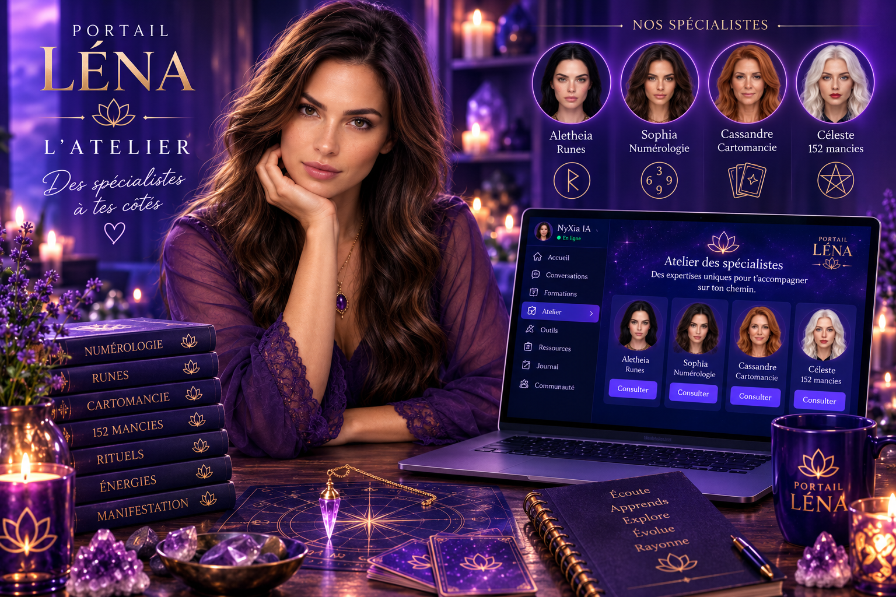
Portail Léna n’a pas été conçu autour d’un personnage qui prétend tout enseigner.
Léna peut t’aider à découvrir.
Sophia peut t’ouvrir le langage des nombres.
Aletheia celui des runes.
Cassandre celui du Tarot.
Céleste celui des mancies et des rituels.
La radiesthésie fait partie des matières pouvant être explorées avec Léna.
La matière pédagogique aborde notamment le rôle du pendule et d’autres instruments radiesthésiques ainsi que l’importance du ressenti et de la neutralité dans cette pratique.
Tu peux donc découvrir progressivement cet univers au lieu de simplement acheter un pendule et de te demander ensuite :
Et ce n’est qu’un exemple parmi les nombreuses directions que ton parcours peut prendre.
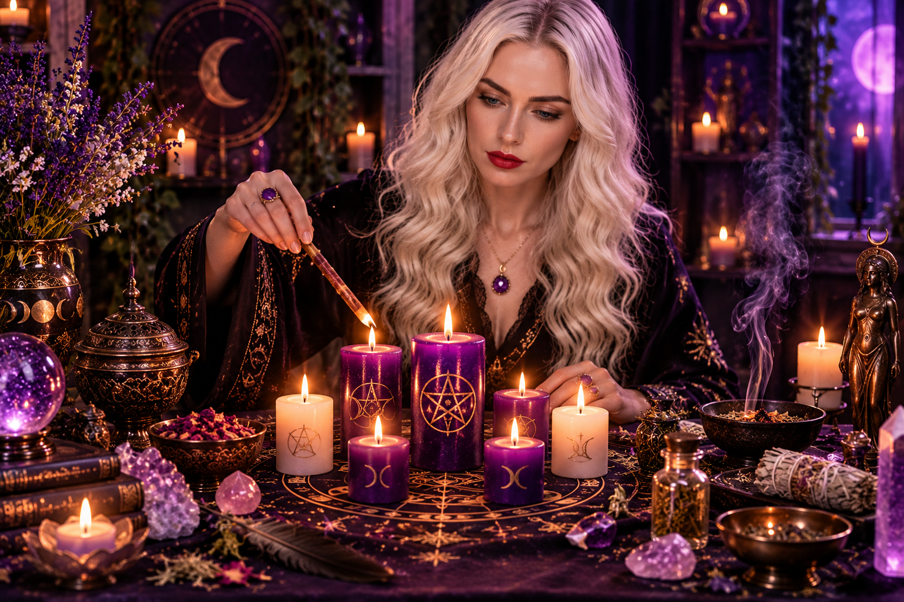
Nous ne voulions surtout pas transformer cette collection en : « Prends cette bougie. Allume-la. Fais ceci. Terminé. »
Parce qu’un rituel possède une logique.
Et surtout… Quelle est ton intention?
L’objectif est donc d’aller progressivement vers la compréhension du rituel de magie, de ses correspondances et de sa construction.
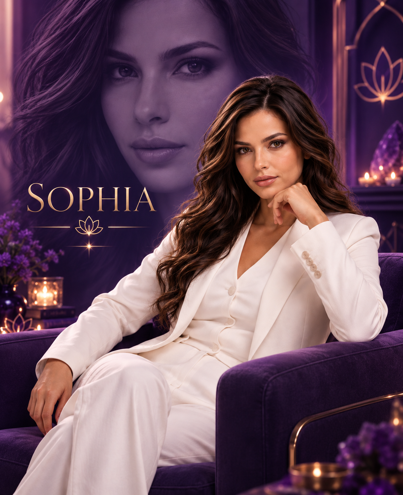
Les nombres t’ont toujours fascinée? Sophia t’accompagne dans l’univers de la numérologie.
Son rôle n’est pas simplement de te donner une interprétation toute faite.
Elle est là pour t’aider à apprendre le langage des nombres, comprendre les calculs, les cycles et les différentes interprétations afin que tu développes progressivement tes propres connaissances.
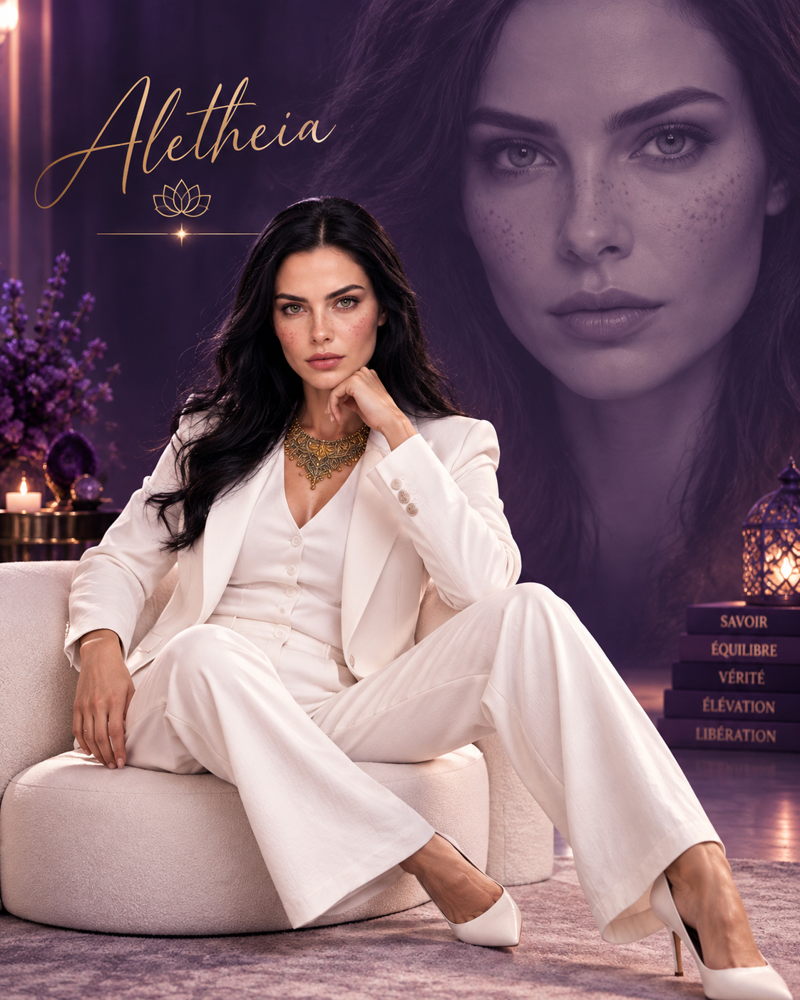
Avec Aletheia, tu entres dans l’univers des runes et du Futhark.
Tu peux apprendre leur symbolisme, leur langage et progressivement comprendre comment construire une lecture plutôt que simplement mémoriser une liste de significations.
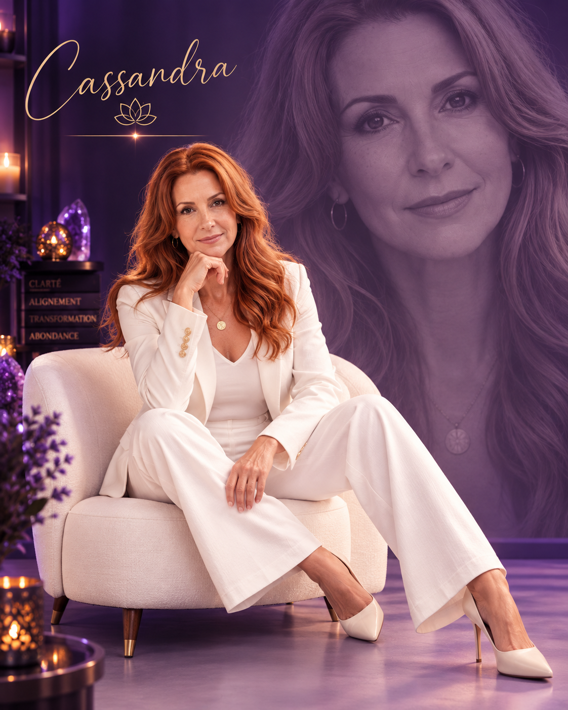
Cassandre t’accompagne dans l’apprentissage du Tarot.
Mais apprendre le Tarot ne signifie pas seulement connaître la définition de chaque carte.
L’objectif est progressivement de comprendre les cartes ensemble, leurs interactions, leurs symboles et la manière dont une lecture peut devenir cohérente.
Et puis il y a Céleste… Son territoire est immense.
Céleste explore avec toi les arts divinatoires et les différentes mancies.
Tu peux découvrir des pratiques auxquelles tu n’aurais peut-être jamais pensé et comprendre leurs particularités avant de décider lesquelles tu souhaites approfondir.
Éric n’est pas là pour t’enseigner la spiritualité.
Il intervient lorsqu’une autre compétence devient nécessaire : apprendre à communiquer à l’ère numérique.
Parce qu’avoir une compétence ne signifie pas automatiquement savoir la présenter.
Et publier continuellement : « J’offre des consultations, écris-moi en privé » n’est pas une stratégie de communication. 😉
Créer du contenu qui suscite des interactions. Ces interactions ouvrent des conversations. Ces conversations permettent de créer des relations. Les relations construisent la confiance. Et la confiance peut éventuellement ouvrir une opportunité lorsqu’une personne possède réellement un besoin auquel tu peux répondre.
Une partie de l’enseignement d’Éric s’appuie sur trois ouvrages écrits par Diane Boyer :
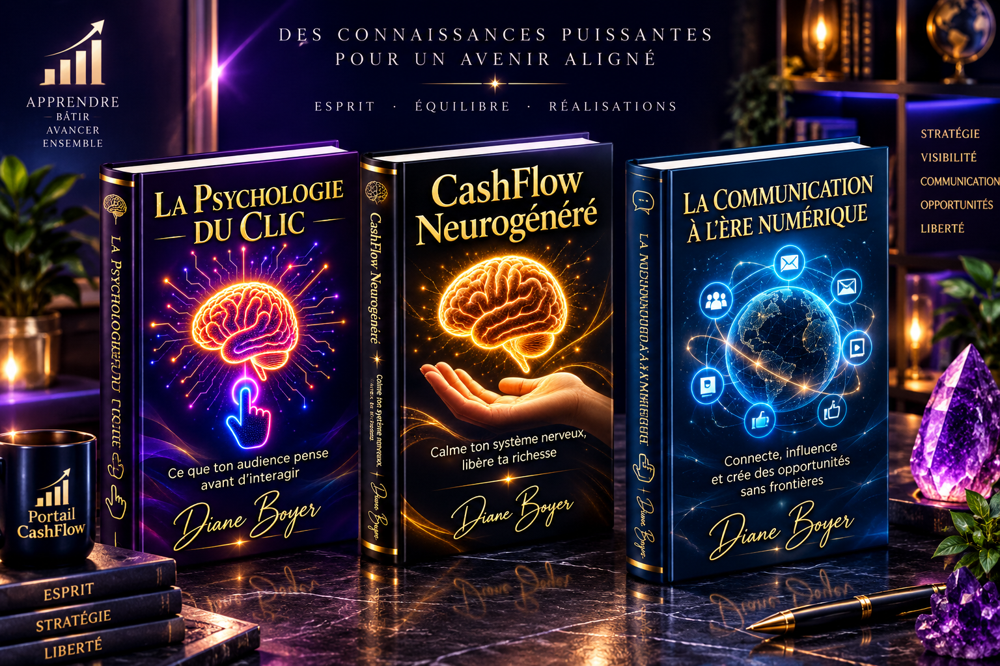
Ces ouvrages sont également disponibles en version papier.
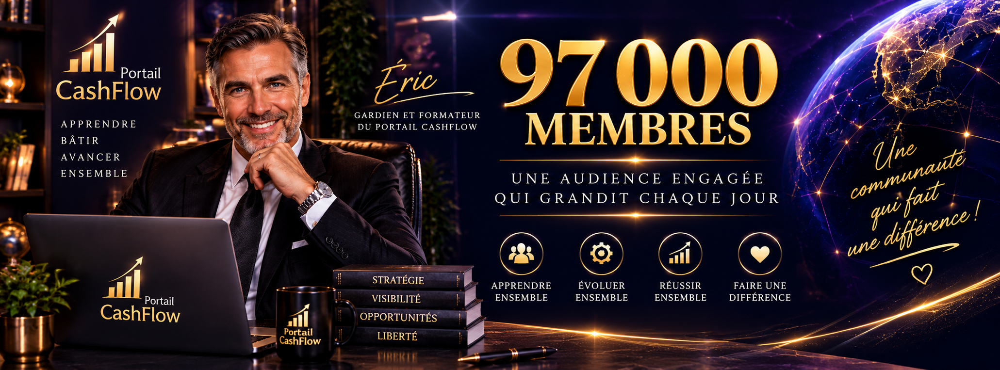
C’est l’une des forces particulières du Portail CashFlow.
Nous ne voulons pas t’apprendre comment créer des interactions pour ensuite te laisser seule devant une page où personne ne te connaît.
L’écosystème donne accès à un terrain permettant de mettre en pratique la communication numérique auprès d’une audience cumulée de plus de 97 000 personnes, en constante évolution.
Tu apprends à communiquer.
À publier.
À observer les réactions.
À participer aux conversations.
À développer des relations.
À reconnaître les besoins.
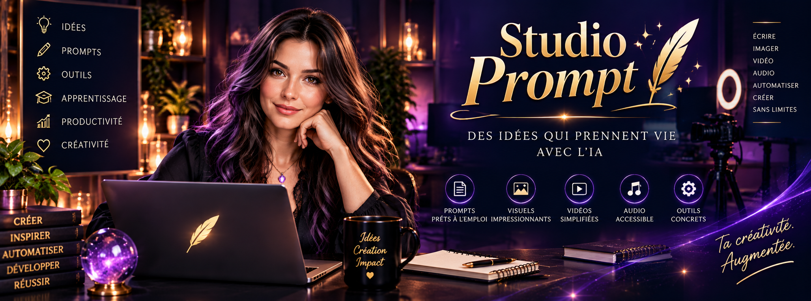
Le Portail Studio Prompt devient ton atelier de travail avec l’intelligence artificielle.
Parce qu’avoir accès à une IA extraordinaire ne sert pas à grand-chose si tu ne sais pas comment lui expliquer clairement ce dont tu as besoin.
Et nous avons poussé le concept encore plus loin.
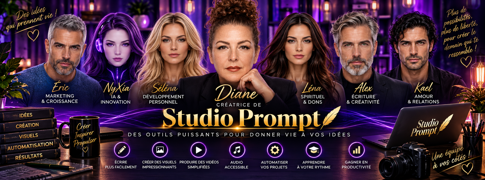
Les personnages peuvent y intervenir dans leur domaine pour t’aider à construire des prompts adaptés à ton travail.
Alex, spécialiste d'écriture. Séléna, spécialiste développement personnel. Kael, spécialiste des relations amoureuses. NyXia, spécialiste de l'unviers entier. Diane, créatrice de l'univers NyXia.
Et Léna dans le Portail Studio Prompt, pourra t’aider à structurer un prompt pour :
préparer une réponse claire lors d’une consultation spirituelle;
créer un contenu spirituel éthique et rassurant;
structurer une offre d’accompagnement spirituel claire;
ou encore mieux organiser certaines communications liées à ton activité.
Tu ne demandes plus seulement à l’IA : « Écris-moi un post Facebook sur la spiritualité. »
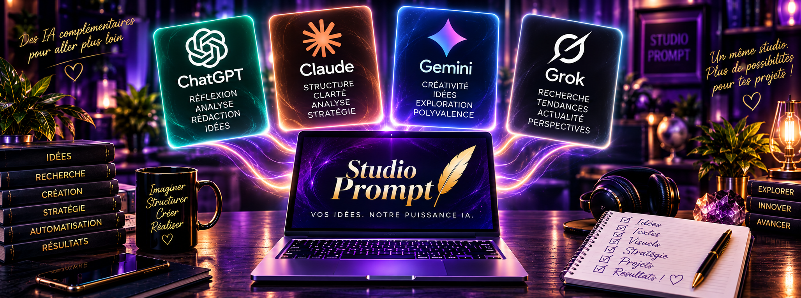
Tu n’as plus besoin de payer pour plusieurs modèles d’IA : ils sont disponibles pour toi directement dans le Portail Studio Prompt.
Le Portail Studio Prompt les rassemble pour te permettre de choisir et d’utiliser différents outils selon ce que tu souhaites accomplir.
Publications. Idées. Structure d’une offre. Communication avec un client. Réflexion. Prompts spécialisés.
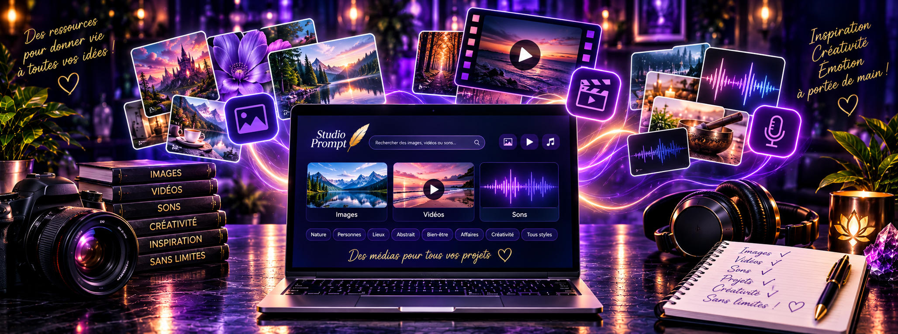
Et parce qu’une publication ne se résume pas à du texte…
Le Portail Studio Prompt comprend également une très large bibliothèque d’images, de vidéos et de sons
pour t’aider à produire des contenus digitaux de très haute qualité.
Avec Léna. Cartographier et valider tes facultés innées — intuition, clair-ressenti, canalisation — pour sortir du doute et poser des bases solides.
Avec Sophia, Cassandre, Aletheia, Céleste. Maîtriser tes outils de prédilection — Tarot, Nombres, Runes, Rituels — grâce à une pratique guidée et continue.
Avec Éric & dans le Studio Prompt et le Portail CashFlow. Transformer tes compétences et ta guidance en une activité pérenne, éthique et magnétique, sans jamais forcer ni spammer.
Tu peux continuer à chercher des réponses un peu partout.
Ou tu peux prendre 20 à 30 minutes pour découvrir, avec quelqu’un de l’équipe, si ce portail est le cadre que tu cherchais.
Sans paiement en ligne • 20–30 min • Quelques questions pour préparer l’échange • Tu restes libre à la fin de l’appel